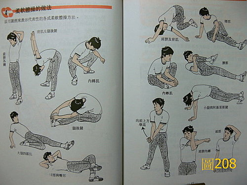
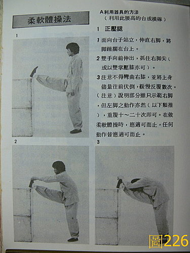
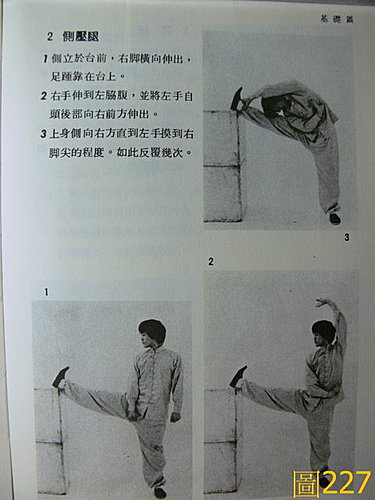
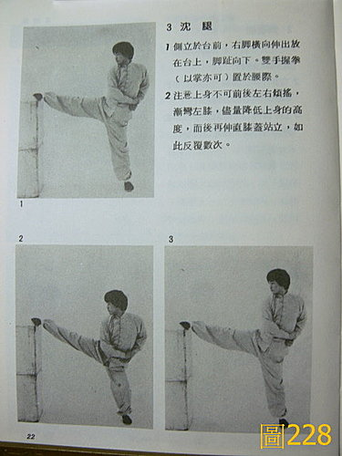
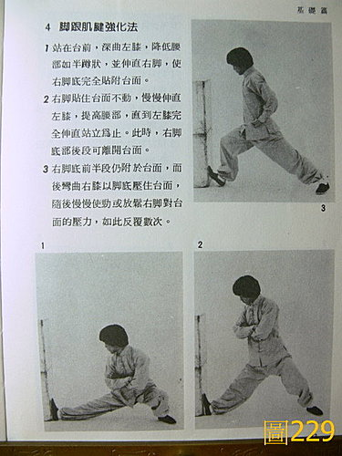
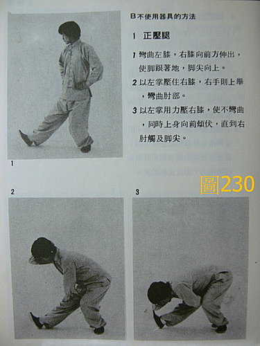
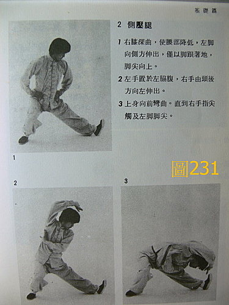
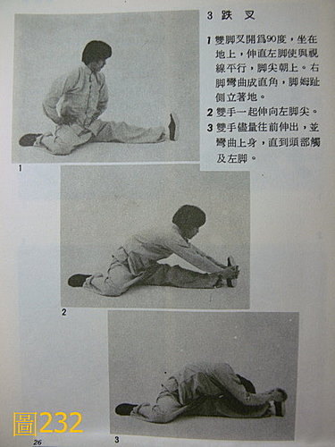
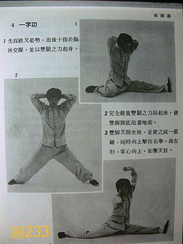

武術 39：一些拉筋的資料
這些資料是用來說明 藥王脈學第 82 條 脈合按摩導引的資料
〈圖208〉《運動傷害的預防與對策‧森本哲郎、妻木充法原著‧聯廣圖書公司發行》。〈圖226～233〉《中國北派拳術入門‧松田隆智著‧益群書店印行》。
雖然有些特殊的拉筋法另當別論，但大抵一般運動和武術運動常用的拉筋法，就是下面這些而已，都是一些很通用的方式，其中又以〈圖208、226、227〉最通用（這三圖幾乎包括各種田徑、球類、武術運動、游泳、一般大眾舞蹈‥‥‥拉筋運動大都是作這些而已），所謂大眾都公認的動作，也就是最安全的動作，除非是自己能力不足，又白目的強去作「劈腿」之類的高難度動作，否則作運動前的柔軟拉筋體操，沒聽說過因此受傷的，柔軟拉筋運動並不是坊間這些書中所謂的「危險運動、不安全」，要用一個凳子躺著拉筋才安全等奇怪說法，這不是一般共識上的事實。柔軟拉筋運動，同時可兼具訓練肌肉平衡性、柔軟度、韌性、協調性、彈性等效果。
現今坊間強調拉筋要用一個凳子，像西醫復健牽引這樣來拉，這種方式是奇怪的，拉筋時要用自己的身體來感受，大腿下的肌肉群和背部的肌肉群是相連接的，不用凳子才能讓身體自由的伸展開來，用一個凳子來拉，或是躺在床上拉，那樣子反而比較像是西醫的復健，因為躺下的時候，背部的肌肉是受到壓抑的情況，胸腹部也無法自由擴張來配合呼吸，不但使身體無法自由的伸展開來，而且容易氣悶頭暈，這樣的拉法只是生硬的把局部的肌肉群扯長（西醫復健牽引的概念），無法配合呼吸一壓一鬆的反覆壓腿，也無法鍛鍊出肌肉群的平衡性、柔軟度和協調度。而扯長只是為了「筋長一寸、壽延十年」這句莫名其妙的話。【這不是《內經》裡的話，不知道是從哪裡聽來的還是自編的？】








